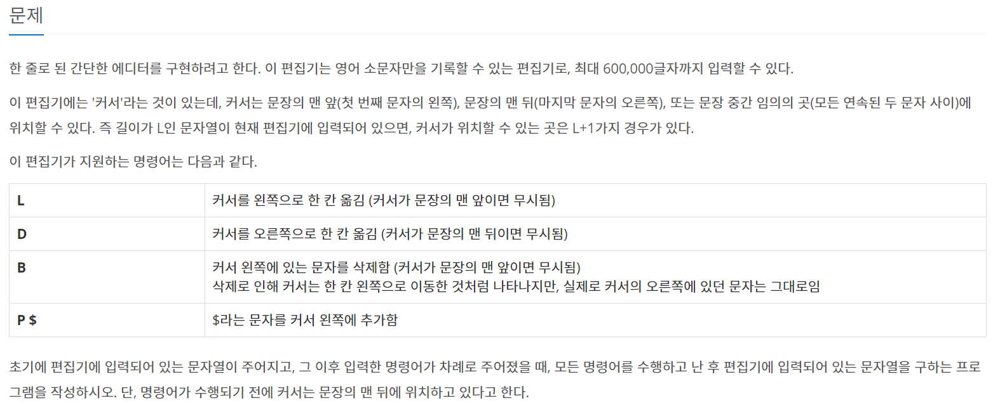
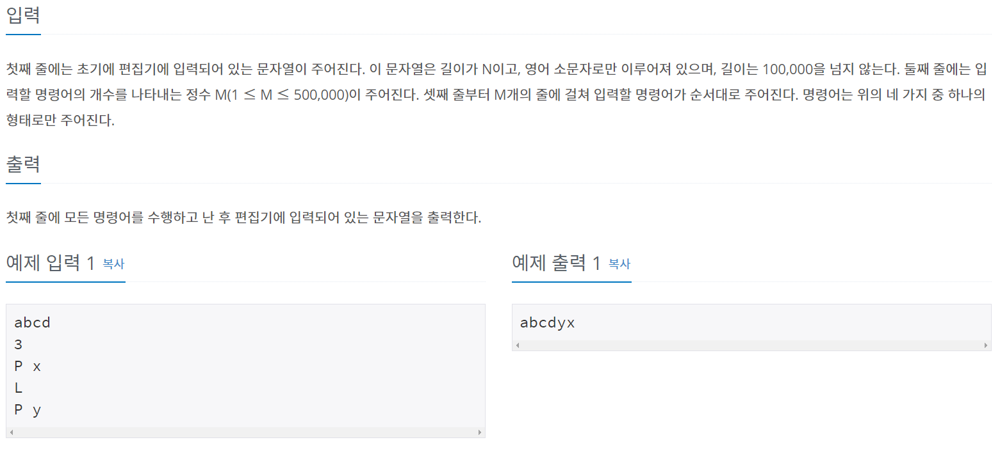
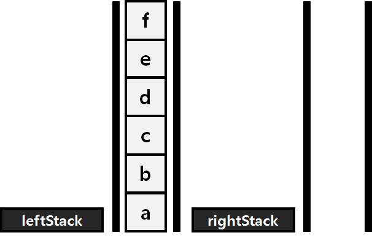
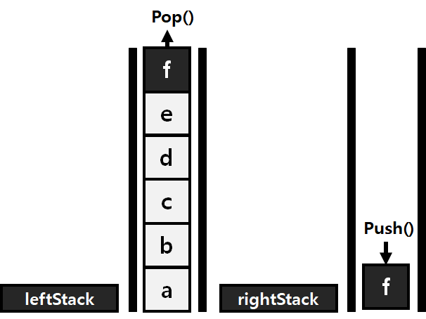
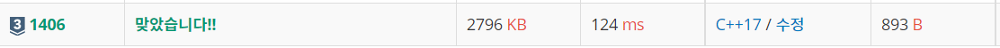

#INFO
난이도 : SILVER3
알고리즘 유형 : STACK(스택)
∞ 문제 출처 : https://www.acmicpc.net/problem/1406
 
#SOLVE
입력받은 문자열을 커서를 기준으로 leftStack , rightStack 2개의 스택을 이용해 저장한다.
예를들어 abcdef 문자열을 입력 받았다고 가정하면 우선 abcdef 모든 문자열을 leftStack에 저장한다.

커서를 왼쪽으로 옮기는 L 명령을 입력 받으면, leftStack의 가장 위에 있는 원소인 f를 pop()하고, rightStack에 push()한다.
그러면 결과적으로, abcde | f 인 상태가 된다.

이 처럼 커서를 기준으로 스택을 2개 활용하면, R/B/P 기능도 간단하게 구현이 가능하다.
#CODE
#include <iostream>
#include <string>
#include <stack>
using namespace std;
int main() {
string str;
cin >> str;
stack<char> leftStack, rightStack;
for (char ch : str)
{
leftStack.push(ch);
}
int testCase;
cin >> testCase;
while(testCase--)
{
char ch;
cin >> ch;
if (ch == 'L')
{
if(!leftStack.empty())
{
rightStack.push(leftStack.top());
leftStack.pop();
}
}
else if (ch == 'D')
{
if (!rightStack.empty())
{
leftStack.push(rightStack.top());
rightStack.pop();
}
}
else if (ch == 'B')
{
if (!leftStack.empty())
{
leftStack.pop();
}
}
else if (ch == 'P')
{
char tmp;
cin >> tmp;
leftStack.push(tmp);
}
}
while (!leftStack.empty())
{
rightStack.push(leftStack.top());
leftStack.pop();
}
while (!rightStack.empty())
{
cout << rightStack.top();
rightStack.pop();
}
return 0;
}